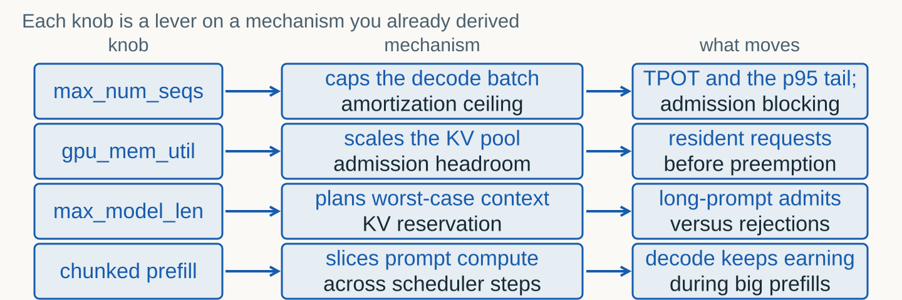
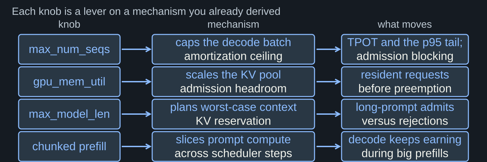
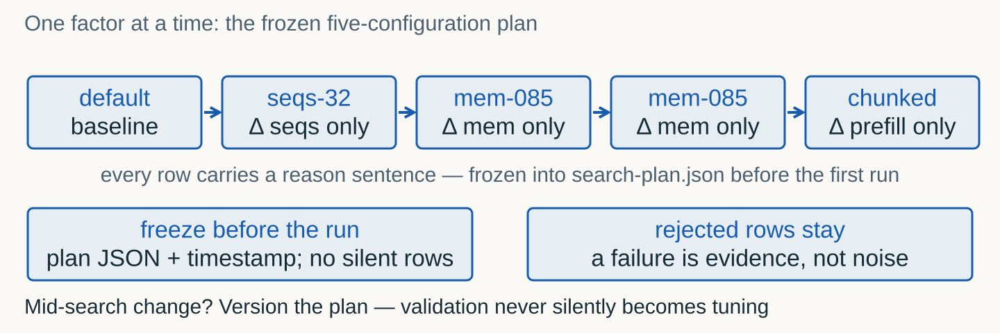
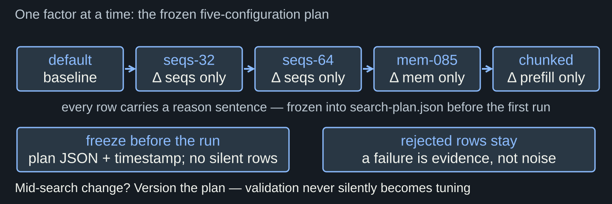
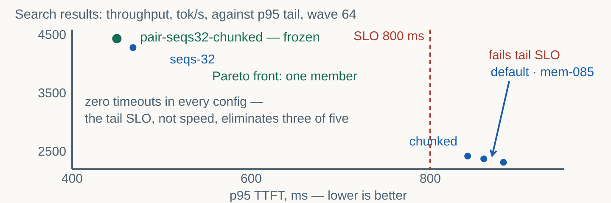
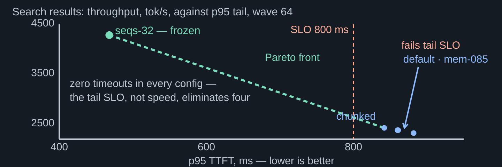

Four knobs, a bounded search, a frozen profile with proof.
Четыре ручки, ограниченный поиск, замороженный профиль с доказательством.
You can read the saturation curve, find the knee, and defend an operating point. But the curve was a given.
Вы умеете читать кривую насыщения, находить колено и защищать рабочую точку. Но кривая была дана.
The curve has knobs. Each one controls a mechanism you already explained in Topic 06 (batching, KV pool, prefill interference).
У кривой появились ручки. Каждая управляет механизмом, который вы уже объяснили в теме 06 (батчинг, KV-пул, prefill-интерференция).


| KnobРучка | MechanismМеханизм | What it tradesРазмен |
|---|---|---|
--max-num-seqs | Ceiling on decode batch sizeПотолок размера decode-батча | Amortization vs tail latencyАмортизация против хвостовой латентности |
--gpu-memory-utilization | Share of VRAM for KV poolДоля VRAM под KV-пул | More residents vs OOM riskБольше резидентов против риска OOM |
--max-model-len | Declared context capЗаявленный потолок контекста | Plan for worst case vs reject longПланировать худший случай против отказа длинным |
| Chunked prefill | Slice large prefillsРежет крупные prefill на куски | Decode not starved vs longer prefillDecode не голодает против более долгого prefill |
Shorter TPOT ticks (fewer requests competing per step). But earlier admission blocking — the queue forms sooner.
Короче тики TPOT (меньше запросов соревнуются за шаг). Но блок допуска наступает раньше — очередь образуется скорее.
Better weight amortization (more requests share each pass). But the tail grows: more concurrent decode work per step.
Лучшая амортизация весов (больше запросов делят каждый проход). Но хвост растёт: больше одновременной decode-работы на шаг.
five declared configs, one run — read the record for numbers: cutting the cap beat default on both axes (default: 2377.1 tok/s, 860 ms). Cutting the cap shortened each request's queue wait so much that completed throughput rose.
пять заявленных конфигов, один прогон — числа читайте в записи: срезка потолка обыграла дефолт по обеим осям (дефолт: 2377.1 ток/с, 860 мс). Срезка потолка настолько укоротила ожидание в очереди у каждого запроса, что завершённый throughput вырос.
The mock charges a quadratic queue penalty per effective batch; a real engine amortizes compute differently. Treat the direction as the lesson, not the magnitude.
Мок берёт квадратичный штраф очереди за эффективный батч; реальный движок амортизирует вычисления иначе. Урок — направление, а не величина.
Larger KV pool — more resident requests before preemption kicks in. The memory knee moves right.
Больше KV-пул — больше резидентных запросов до включения вытеснения. Колено памяти уезжает вправо.
More VRAM for activations and workspace. But the KV pool shrinks — preemption arrives earlier under load.
Больше VRAM на активации и рабочие области. Но KV-пул сжимается — вытеснение приходит раньше под нагрузкой.
Any client may arrive with a long prompt. The scheduler plans for the worst case — reserved but possibly wasted.
Любой клиент может прийти с длинным промптом. Шедулер планирует худший случай — зарезервировано, но, возможно, впустую.
Plan for what actually arrives. But a legitimate long prompt gets rejected — a product decision, not a tuning one.
Планируй то, что реально приходит. Но легитимный длинный промпт получает отказ — это продуктовое решение, а не тюнинг-решение.
A new request's prefill takes the whole step. Every resident request waits. TPOT jumps — the Topic 06 waterfall showed this.
Prefill нового запроса забирает целый шаг. Каждый резидентный запрос ждёт. TPOT прыгает — водопад темы 06 это показывал.
The prefill is sliced across multiple steps. Decode keeps earning tokens. The cost: slightly longer total prefill latency.
Prefill нарезан на несколько шагов. Decode продолжает зарабатывать токены. Цена: чуть более долгая суммарная prefill-латентность.
4 knobs × several values each × 4 waves × 3 repeats = hundreds of GPU-hours. The budget is finite.
4 ручки × несколько значений каждая × 4 волны × 3 повтора = сотни GPU-часов. Бюджет конечен.
Enumerate a small space. One-factor-at-a-time first, then a confirmatory pair. Write the plan BEFORE running.
Перечисли малое пространство. Сначала по одному фактору за раз, затем подтверждающая пара. План пишется ДО прогона.
| ApproachПодход | RunsПрогоны | What you learnЧто вы узнаете |
|---|---|---|
| Full grid (3 values × 4 knobs)Полная сетка (3 значения × 4 ручки) | 81 configs × 4 waves × 3 repeats = 972 runs81 конфиг × 4 волны × 3 повтора = 972 прогона | Interactions — at a budget nobody hasВзаимодействия — за бюджет, которого нет ни у кого |
| One-factor-at-a-timeПо одному фактору за раз | 1 baseline + 4 single-factor moves = 5 configs × 4 waves1 базовая + 4 однофакторные сдвижки = 5 конфигов × 4 волны | Each knob's isolated direction and magnitudeИзолированные направление и величина каждой ручки |
| Confirmatory pair (optional)Подтверждающая пара (опционально) | +1 config combining the two best moves+1 конфиг, объединяющий две лучшие сдвижки | Whether the wins compound or cancelСкладываются ли выигрыши или гасят друг друга |


| ConfigКонфиг | seqs | mem | chunked | ReasonПричина |
|---|---|---|---|---|
| default | 256 | 0.9 | no | Baseline: vLLM defaultsБазовая: дефолты vLLM |
| seqs-32 | 32 | 0.9 | no | Sacrifice amortization for tailЖертвуем амортизацией ради хвоста |
| pair-seqs32-chunked | 32 | 0.9 | yes | Confirmatory pair: main effect + prefill slicingПодтверждающая пара: главный эффект + нарезка prefill |
| mem-085 | 256 | 0.85 | no | Free VRAM for activationsОсвобождаем VRAM под активации |
| chunked | 256 | 0.9 | yes | Protect decode from prefillЗащищаем decode от prefill |
The leaderboard takes the geometric mean of throughput at waves 32 and 64 — tuning for wave 128 alone optimizes a number nobody scores.
Лидерборд берёт геометрическое среднее throughput на волнах 32 и 64 — тюнинг под одну волну 128 оптимизирует число, которое никто не оценивает.
Wave 64 sits where the interesting behavior lives for this workload. Wave 128 is retained: does the config move where collapse begins?
Волна 64 стоит там, где для этой нагрузки живёт интересное поведение. Волна 128 остаётся: сдвигает ли конфиг точку, где начинается обвал?


One config is fastest but has the longest tail. Another is gentle but slow. The front is the set where nothing dominates.
Один конфиг самый быстрый, но с самым длинным хвостом. Другой щадящий, но медленный. Фронт — множество, где ничто не доминирует.
Not "highest throughput" but "highest throughput that still clears the SLO." The front shows the trade; the SLO is your value judgement.
Не максимальный throughput, а максимальный throughput, который всё ещё проходит SLO. Фронт показывает размен; SLO — ваша ценностная оценка.
Fastest SLO-eligible front point in the recorded run. Forecast written before held-out: p95 well below the 800 ms tail SLO.
Самая быстрая проходящая SLO точка фронта в записанном прогоне. Прогноз написан до held-out: p95 заметно ниже хвостового SLO в 800 мс.
Declared synthetic V-set, frozen profile, one run: 4426.9 tok/s, p95 454 ms, zero timeouts. The forecast survived contact with new data.
Заявленный синтетический V-сет, замороженный профиль, один прогон: 4426.9 ток/с, p95 454 мс, ноль таймаутов. Прогноз выжил при встрече с новыми данными.
Same waves, same SLO, same journal fields. New texts from the V-split. One run. No policy change.
Те же волны, тот же SLO, те же поля журнала. Новые тексты из V-сплита. Один прогон. Без правок политики.
Accept: clears SLO on new data. Reject: fails. Inconclusive: cannot distinguish healthy from lucky.
Accept: проходит SLO на новых данных. Reject: проваливает. Inconclusive: здоровое не отличить от удачного.
| VerdictВердикт | MeaningСмысл | ObligationОбязательство |
|---|---|---|
| Accept | Clears SLO on new textsПроходит SLO на новых текстах | Ship the profile; keep the journal as provenanceОтгружай профиль; журнал остаётся провенансом |
| Reject | Fails SLO on new textsПроваливает SLO на новых текстах | Back to the search table — the forecast was wrong, name the mechanismНазад к таблице поиска — прогноз был неверен, назови механизм |
| Inconclusive | Cannot separate healthy from luckyЗдоровое не отделить от удачного | More data or a tighter SLO — never a silent re-rollБольше данных или более тесный SLO — но никогда не молчаливая пересдача |
Longest prompt in the corpus (817 tokens) against the smallest KV pool (mem 0.70). Served or rejected? The answer maps the failure boundary BEFORE production finds it.
Самый длинный промпт корпуса (817 токенов) против самого малого KV-пула (mem 0.70). Обслужен или отклонён? Ответ картирует границу отказа ДО того, как её найдёт продакшен.
Trigger (metric + threshold + duration), action (revert / shed / page), evidence (what the on-call checks at 3 a.m.). Three TODOs, three sentences, zero dashboards invented.
Триггер (метрика + порог + длительность), действие (откат / сброс / пейдж), доказательства (что дежурный проверяет в 3 часа ночи). Три TODO, три предложения, ноль выдуманных дашбордов.
| EngineДвижок | Key strengthКлючевая сила | When to chooseКогда выбирать |
|---|---|---|
| vLLM | Open, community-driven, broad model supportОткрытый, движок комьюнити, широкая поддержка моделей | Default choice; this courseВыбор по умолчанию; этот курс |
| SGLang | RadixAttention prefix caching, structured genRadixAttention prefix-кэширование, структурированная генерация | Chat-heavy, prompt-reuse workloadsНагрузки с преобладанием чата и повтором промптов |
| TensorRT-LLM | NVIDIA-optimized, highest single-GPU perfОптимизация под NVIDIA, высшая производительность на одном GPU | Pure NVIDIA, latency-criticalЧистый NVIDIA, критичность к латентности |
| DeepInfer (Apache-2.0) | Custom MLA/GEMM kernels, async scheduler, MoEКастомные MLA/GEMM-ядра, async-шедулер, MoE | DeepSeek models, SM100/AscendМодели DeepSeek, SM100/Ascend |
| TGI (Hugging Face) | Easy deployment, broad compatibilityПростой деплой, широкая совместимость | Quick prototyping, HF ecosystemБыстрое прототипирование, экосистема HF |
SGLang calls it max-running-requests; TensorRT-LLM folds it into max_batch_size; TGI speaks of max_concurrent_requests. The batching economy is the same equation.
SGLang зовёт это max-running-requests; TensorRT-LLM прячет в max_batch_size; TGI говорит о max_concurrent_requests. Экономика батчинга — то же уравнение.
Defaults, kernel efficiency, and which trade-offs are exposed. Porting a profile means re-deriving the knee on the new engine — never copying numbers.
Дефолты, эффективность ядер и то, какие размены выставлены наружу. Перенос профиля — заново вывести колено на новом движке, а не копировать числа.
Queue penalty, prefill rate and per-token cost are written in the notebook and calibrated once. It exists so the METHOD runs in minutes on CPU.
Штраф очереди, скорость prefill и цена за токен записаны в ноутбуке и откалиброваны однажды. Она существует, чтобы МЕТОД гонялся за минуты на CPU.
Kernel realities, preemption storms, allocator fragmentation. That is what the GPU profile is for — same notebook, same protocol, measured numbers.
Реалии ядер, штормы вытеснений, фрагментация аллокатора. Для того и профиль на GPU — тот же ноутбук, тот же протокол, измеренные числа.
A Triton candidate raised speed but failed the quality gate. It stays rejected — the search table keeps the row with its numbers and the one-sentence why.
Кандидат Triton поднял скорость, но провалил гейт качества. Он остаётся отклонённым — таблица поиска хранит строку с его числами и «почему» в одно предложение.
Speed, tail, errors, quality, cost. A knob that wins on one axis and loses on another is not a win; it is a trade the product owner must sign.
Скорость, хвост, ошибки, качество, стоимость. Ручка, выигрывающая на одной оси и проигрывающая на другой, — не выигрыш; это размен, который должен подписать продуктовый владелец.
Declare the space. Keep the failures. Freeze the choice. Let held-out judge.
Объяви пространство. Сохрани неудачи. Заморозь выбор. Пусть судит held-out.